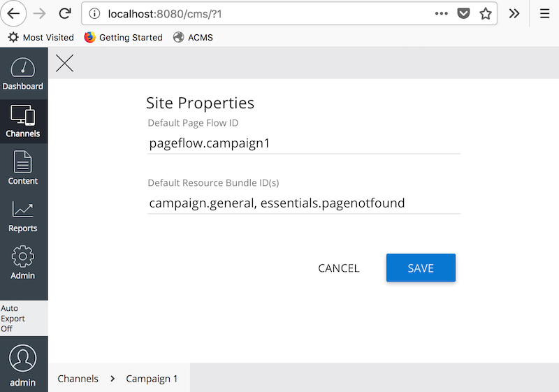

Configuration
Introduction
Configurations include two parts:
- Configure Page Flow HstSiteMapItemHandler ID (
defaultpageflowcontrolhandlerby default) for a mount or sitemap item. - Configure Page Flow Definition ID for a channel, mount or sitemap item.
- (Optional) Configure Page Flow Channel Info for a channel.
Page Flow HstSiteMapItemHandler ID (defaultpageflowcontrolhandler by default) must be configured in either mount level or sitemap item level. So, Page Flow Module can handle automatic initiation, redirection, etc. for a visitor based on the visitor's Page Flow instance lifecycle.
Also, Page Flow Definition ID must be configured in a channel, mount or sitemap item level. So, Page Flow Module will initialize and manage a Page Flow instance based on the configured Page Flow Definition ID.
Configure Page Flow HstSiteMapItemHandler ID (defaultpageflowcontrolhandler by default) for a mount or sitemap item
One ore more HstSiteMapItemHandlers can be configured in either mount level (@hst:defaultsitemapitemhandlerids property) or sitemap item level (@hst:sitemapitemhandlerids property).
It could be very convenient to configure the HstSiteMapItemHandler ID value in the mount level because the same HstSiteMapItemHandlers will be applied to all the resolved sitemap items under the same resolved mount. So, you don't need to configure the HstSiteMapItemHandler ID for each sitemap item configuration again and again. This is extremely useful when you have a channel that serves a Page Flow Module driven request processing. e.g, "Identity Protection Product Campaign Microsite Channel".
However, if you want to control it in more granular level by having some sitemap items for other page serving, and having some other sitemap items for Page Flow Module driven request processing, then you might want to configure the the HstSiteMapItemHandler ID value in each sitemap item level for some selected sitemap items. e.g, "/campaign1", "/campaign1/_any_", ... In this case, make sure that you configured the Page Flow HstSiteMapItemHandler ID on all the possible sitemap items for Page Flow Module driven requests.
Scenario 1: Configure Page Flow HstSiteMapItemHandler ID in Mount Level
Suppose you have an HST Mount configuration at /hst:hst/hst:hosts/dev-localhost/localhost/hst:root/campaign1 which is associated with a channel called "Campaign 1".
If you want the channel to be controlled by the Page Flow module, then simply add the registered HstSiteMapItemHandler name to the @hst:defaultsitemapitemhandlerids of the mount configuration like the following:
/campaign1:
jcr:primaryType: hst:mount
hst:defaultsitemapitemhandlerids: [defaultpageflowcontrolhandler]
Scenario 2: Configure Page Flow HstSiteMapItemHandler ID in SiteMap Item Level
You can configure the @hst:sitemapitemhandlerids property on each sitemap item separately in this scenario. If you set the property on specific sitemap items, any requests onto the sitemap items will be controlled by Page Flow Module. Otherwise, Page Flow module wouldn't do anything for the other sitemap items.
/payment:
jcr:primaryType: hst:sitemapitem
hst:sitemapitemhandlerids: [defaultpageflowcontrolhandler]
Configure Page Flow Definition ID for a channel, mount or sitemap item
Once you published a Page Flow Definition document like shown in the Demo Project, you can associate the Page Flow Definition ID value (the Flow ID field value in the editor) to a channel, a mount or a sitemap item.
The default PageFlowControl implementation (org.onehippo.forge.pageflow.hst.sitemapitemhandler.DefaultHstPageFlowControl) resolves the current Page Flow Definition ID in the following order:
- If the current servlet request has a non-blank string attribute by name,
org.onehippo.forge.pageflow.core.rt.PageFlowControl.PAGE_FLOW_ID_ATTR_NAME, then it is used. - Else if the current
HttpSessionhas a non-blank string attribute by name,org.onehippo.forge.pageflow.core.rt.PageFlowControl.PAGE_FLOW_ID_ATTR_NAME, then it is used. - Else If the current resolved sitemap item returns a non-blank value for a parameter named
pageflowid, it is used. - Else if the current resolved mount is associated with a channel, and if the
ChannelInfoclass of the channel is type oforg.onehippo.forge.pageflow.hst.channel.PageFlowSiteInfo, and if the channel info object returns a non-blank value onPageFlowSiteInfo#getDefaultPageFlowId(), then it is used. If theChannelInfois not null but is not type oforg.onehippo.forge.pageflow.hst.channel.PageFlowSiteInfo, then the channel property namedpageflowidwill be read. If the value is non-blank, it is used. - Else if the resolved mount's mount property or normal property named
pageflowidwill be read. If not blank, it is used. - Otherwise, it will fail to resolve the current Page Flow Definition ID, and as a result all the Page Flow Module driven request processing will fail.
(Optional) Configure Page Flow Channel Info for a channel
When you configure a Page Flow Definition for a dedicated channel, you might also want to configure the Page Flow Definition through the Channel Setting window like the following:
So, you can simply copy Flow ID field value in the Page Flow Definition document and paste it into the Default Page Flow ID input shown above.
Page Flow Module provides a default Channel Info: org.onehippo.forge.pageflow.hst.channel.PageFlowSiteInfo
To use this Channel Info, you can configure your channel configuration like the following:
/hst:channel:
jcr:primaryType: hst:channel
hst:channelinfoclass: org.onehippo.forge.pageflow.hst.channel.PageFlowSiteInfo
...